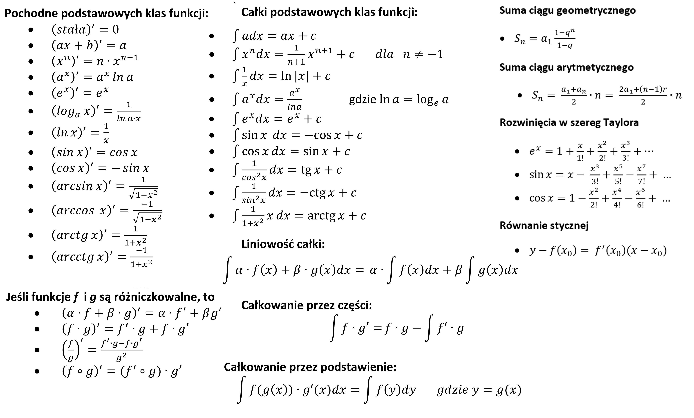

Całki¶
Definiujemy całkę nieoznaczoną funkcji \(f(x)\) jako funkcję pierwotną \(F(x)\), czyli taką funkcję, że \(F'(x)=f(x)\). Zapisujemy to w postaci
Definiujemy całkę oznaczoną funkcji \(f(x)\) na przedziale \([a,b]\) jako różnicę wartości funkcji pierwotnej w punktach \(b\) i \(a\), czyli
Wykład¶
- Materiały: Całki.pdf
- Karta wzorów
- Starsza prezentacja
{kind=link}
Wzory fundamentalne¶

- liniowość całki: \(\displaystyle \int \bigl[\alpha f(x)+\beta g(x)\bigr] \, dx=\alpha\int f(x)\,dx+\beta\int g(x)\,dx\)
- całkowanie przez części: \(\displaystyle \int f\,dg=f\,g-\int g\,df\)
- podstawienie, czyli zmiana zmiennej: \(\displaystyle \int f\bigl(g(x)\bigr)g'(x)\,dx=\int f\bigl(g(x)\bigr)\,dg(x)=\int f(y)\,dy\)
- podstawowe twierdzenie rachunku całkowego: \(\displaystyle F'(x)=f(x)\implies \int_a^b f(x)\,dx=F(b)-F(a)\)
- całkowanie odwraca różniczkowanie: \(\displaystyle \int f'(z)\,dz=f(z)+C\)
- różniczkowanie odwraca całkowanie: \(\displaystyle \left(\int f(z)\,dz\right)'=f(z)\)
- funkcja stała: \(\displaystyle \int c\,dx=cx+C\)
- funkcja potęgowa: \(\displaystyle \int x^\alpha\,dx=\frac{x^{\alpha+1}}{\alpha+1}+C\), gdzie \(\alpha\neq -1\)
- funkcja odwrotna: \(\displaystyle \int \frac{1}{x}\,dx=\ln\lvert x\rvert+C\)
- funkcja wykładnicza: \(\displaystyle \int e^x\,dx=e^x+C\)
- sinus: \(\displaystyle \int \sin x\,dx=-\cos x+C\)
- cosinus: \(\displaystyle \int \cos x\,dx=\sin x+C\)
Quiz¶
1. Załóżmy, że znasz prędkość \(v(t)\) pewnego obiektu w każdej chwili \(t\) oraz jego położenie w chwili \(t=0\) i chcesz wyznaczyć jego położenie \(s(t)\) w dowolnej chwili \(t\). Czy skorzystasz z całek czy pochodnych?
2. Załóżmy, że znasz położenie \(s(t)\) pewnego obiektu w każdej chwili \(t\) i chcesz wyznaczyć jego prędkość \(v(t)\) w dowolnej chwili \(t\). Użyjesz całek czy pochodnych?
3. Niech \(f(x)\) będzie pewną ciągłą i różniczkowalną funkcją. Uprość następujące całki:
- a) \(\displaystyle \int df\),
- b) \(\displaystyle \int \frac{df}{dx}\,dx\),
- c) \(\displaystyle \int f'(x)\,dx\).
4. Ćwiczenie z terminologii: które z poniższych całek są nieoznaczone, które oznaczone, a które właściwe lub niewłaściwe?
- a) \(\displaystyle \int_0^\infty e^{-x^2}\,dx\),
- b) \(\displaystyle \int x^2\,dx\),
- c) \(\displaystyle \int_0^z dx\),
- d) \(\displaystyle \int \frac{1}{\sqrt{x}}\,dx\),
- e) \(\displaystyle \int_2^4\frac{1}{\sqrt{x(x-1)}}\,dx\).
Zadania do wykonania ręcznie¶
Zadanie 1. Oblicz ręcznie całki nieoznaczone — bezpośrednio, przez podstawienie lub przez części:
- a) \(\displaystyle \int \left(\frac13x^4-5\right)\,dx\)
- ą) \(\displaystyle \int (\sin^2x+\cos^2x)\,dx\)
- b) \(\displaystyle \int (5\sin x+3e^x)\,dx\)
- c) \(\displaystyle \int \sqrt[3]{x}\,dx\)
- ć) \(\displaystyle \int \sqrt{10x}\,dx\)
- d) \(\displaystyle \int \frac{dx}{2x}\)
- e) \(\displaystyle \int (x^2+3x+5)\sqrt{x}\,dx\)
- ę) \(\displaystyle \int \frac{11x^5-12x^3+2x^2-1}{x}\,dx\)
- f) \(\displaystyle \int \frac{x^2-1}{x-1}\,dx\)
- g) \(\displaystyle \int (3-5x)\sqrt{x}\,dx\)
- h) \(\displaystyle \int \frac{x+2}{x+1}\,dx\)
- i) \(\displaystyle \int \frac{1}{2x+7}\,dx\)
- j) \(\displaystyle \int \frac{3x}{2x^2+5}\,dx\)
- k) \(\displaystyle \int x^2(1+x)^2\,dx\)
- l) \(\displaystyle \int x\sin(x^2)\,dx\)
- ł) \(\displaystyle \int (x+5)^{60}\,dx\)
- m) \(\displaystyle \int \cos\left(\frac52x+3\right)\,dx\)
- n) \(\displaystyle \int \frac{\cos(\ln x)}{x}\,dx\)
- ń) \(\displaystyle \int \sin(\sin x)\cos x\,dx\)
- o) \(\displaystyle \int x\sqrt{x^2-3}\,dx\)
- ó) \(\displaystyle \int \sqrt{5x+10}\,dx\)
- p) \(\displaystyle \int \frac{e^{1/x}}{x^2}\,dx\)
- q) \(\displaystyle \int (e^{x+1})^2\,dx\)
- r) \(\displaystyle \int x^2e^{x^3+1}\,dx\)
- s) \(\displaystyle \int 5^{2x}\,dx\), pamiętając, że \(\displaystyle \int a^x\,dx=\frac{a^x}{\ln a}\)
- ś) \(\displaystyle \int e^x\sin x\,dx\)
- t) \(\displaystyle \int x^2e^x\,dx\)
- u) \(\displaystyle \int (x+7)\sin(x+3)\,dx\)
- v) \(\displaystyle \int x^2\ln x\,dx\)
- w) \(\displaystyle \int \sqrt{x}\ln x\,dx\)
- x) \(\displaystyle \int x\ln x\,dx\)
- y) \(\displaystyle \int \ln x\,dx\)
- z) \(\displaystyle \int \sin x\cos x\,dx\)
- ź) \(\displaystyle \int \sin^2x\,dx\)
Zadanie 2. Oblicz ręcznie:
Zadanie 3. Oblicz ręcznie pole pod grzbietem sinusa,
oraz w Octave lub Wolfram Alpha długość krzywej sinusa na tym samym odcinku, korzystając ze wzoru
gdzie \(f(x)=\sin x\).
Zadanie 4. Oblicz ręcznie pole figury ograniczonej krzywymi \(y=e^x\), \(y=e^{-x}\) oraz prostą \(x=1\).
Zadanie 5. Oblicz pole obszaru ograniczonego liniami \(x=1\), \(x=2\), \(y=0\) oraz \(y=x^2+1\).
Zadania do wykonania przy asyście komputera¶
Zadanie 1. Wyznacz na komputerze całki nieoznaczone, których rozwiązania nie są funkcjami elementarnymi:
- \(\displaystyle \int x^2e^{-x^2}\,dx\),
- \(\displaystyle \int \sqrt{t}\,e^{-t}\,dt\).
Zadanie 2. Policz na komputerze
Zadanie 3. Korzystając z Octave, wyznacz wartości całki Fresnela
dla \(x=0\), \(0.5\), \(1\), \(10\), \(100\). Porównaj wyniki uzyskane w Octave z wynikami otrzymanymi w Wolfram Alpha.
Zadanie 4. Korzystając z Octave, wyznacz wartość całki
- a) Wypróbuj kilka metod Octave, np.
quad,quadl,quadv,quadgkiquadcc. - b) Porównaj wynik z tym, jaki podaje Wolfram Alpha.
- c) Sprawdź, jakie oszacowanie niepewności wartości całki zwraca ta metoda Octave, która zwraca jakikolwiek wynik.